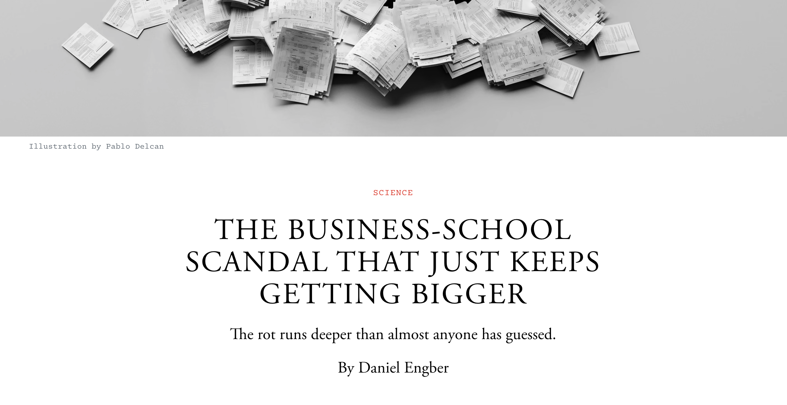

Open science tools
2024-11-20 Wed
Overview
In the news


Open science perspective
- No raw data, but…
- Shared methodology
- Survey questions

Ioannidis

…Let me start with disclosures. My main conflict of interest is that I try to be a scientist. This means I am probably biased and often wrong, but hopefully not totally resistant to the possibility of getting corrected.
Ioannidis (2024)
Let me also make some preemptive comments. First and foremost, science is the best thing that can happen to humans, and research should be supported with heightened commitments. You have probably heard this too many times, but it is worth repeating.
Ioannidis (2024)
However, most research done to date has used nonreproducible, nontransparent, and suboptimal research practices. Science is becoming more massive and more complex. Scientific publications…are mostly advertisements (“trust me, this research was done”); raw data and experimental materials and algorithms are not usually shared. Moreover, our reward systems in academia and science are aligned with nonreproducible, nontransparent, and suboptimal research practices. Can we do better?
Ioannidis (2024)
Announcements
- This Friday, November 22
Last time…
- Active curation
- Organize data so it is ready for sharing during the data collection process
- Related to continuous integration/continuous delivery (CI/CD) in software engineering
- What do students want researchers to share?
- What are the pros and cons of active vs. post hoc data curation?
Today
Open science tools
- Read
- Explore
- “FORRT - Framework for Open and Reproducible Research Training” (n.d.)
- Complete (optional)
- Questionnaire based on Chopik et al. (2018). Results are here
Kathawalla et al. (2021)
This article provides a roadmap to assist graduate students and their advisors to engage in open science practices. We suggest eight open science practices that novice graduate students could begin adopting today. The topics we cover include journal clubs, project workflow, preprints, reproducible code, data sharing, transparent writing, preregistration, and registered reports.
Kathawalla et al. (2021)
To address concerns about not knowing how to engage in open science practices, we provide a difficulty rating of each behavior (easy, medium, difficult), present them in order of suggested adoption, and follow the format of what, why, how, and worries.
Kathawalla et al. (2021)
We give graduate students ideas on how to approach conversations with their advisors/collaborators, ideas on how to integrate open science practices within the graduate school framework, and specific resources on how to engage with each behavior.
Kathawalla et al. (2021)
We emphasize that engaging in open science behaviors need not be an all or nothing approach, but rather graduate students can engage with any number of the behaviors outlined.
Kathawalla et al. (2021)
- Open Science Framework (OSF) project: https://osf.io/w5mbp/
- Wiki: https://osf.io/w5mbp/wiki/home/

Chopik et al. (2018)
Over the past 10 years, crises surrounding replication, fraud, and best practices in research methods have dominated discussions in the field of psychology. However, no research exists examining how to communicate these issues to undergraduates and what effect this has on their attitudes toward the field.
Chopik et al. (2018)
We developed and validated a 1-hr lecture communicating issues surrounding the replication crisis and current recommendations to increase reproducibility. Pre- and post-lecture surveys suggest that the lecture serves as an excellent pedagogical tool.
Chopik et al. (2018)
Following the lecture, students trusted psychological studies slightly less but saw greater similarities between psychology and natural science fields. We discuss challenges for instructors taking the initiative to communicate these issues to undergraduates in an evenhanded way.
Chopik et al. (2018)
- Table 1 from Chopik et al. (2018): https://journals.sagepub.com/doi/10.1177/0098628318762900#table1-0098628318762900
- Table 2 from Chopik et al. (2018): https://journals.sagepub.com/doi/10.1177/0098628318762900#table2-0098628318762900
Reproducibility notes
- Survey questions in article
- OSF project for materials: Defever, Chopik, Keller, & Bremner (2016)
- Data shared, but not in an easily reproducible form
What do you think?
- Survey-03 results
Next time
Work session: Data sharing & Final Projects
- Assignment distributed
- Final project survey